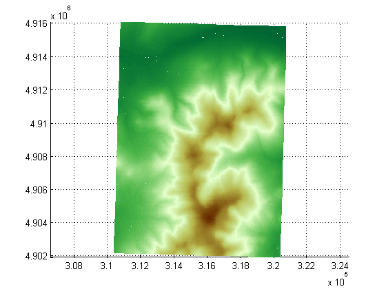

This gallery illustrates the range of maps that you can create using mapshow.
Display the roads geographic data structure.
roads = shaperead('concord_roads.shp');
figure
mapshow(roads);
Display the roads shape and change the LineStyle.
figure mapshow('concord_roads.shp','LineStyle',':');
Display the roads shape, and render using a SymbolSpec.
To learn about the concord_roads.shp dataset, read its associated concord_roads.txt metadata file which describes the attributes.
type concord_roads.txt
A shapefile data set for roads in part of Concord, Massachusetts,
USA comprising the following files:
concord_roads.dbf
concord_roads.shp
concord_roads.shx
Source
------
Office of Geographic and Environmental Information (MassGIS),
Commonwealth of Massachusetts Executive Office of Environmental Affairs
(http://www.state.ma.us/mgis/)
Coordinate system/projection
----------------------------
All data distributed by MassGIS are registered to the NAD83 datum,
Massachusetts State Plane Mainland Zone coordinate system. Units are in
meters.
Data set construction
---------------------
This data set was constructed by concatenating Massachusetts Highway
Department road shapefiles for the Maynard and Concord USGS Quadrangles,
from compressed files mrd97.exe and mrd104.exe.
Features were selected with bounding boxes intersecting the following
box:
[206500 (min easting) 910500 (min northing)
211500 (max easting) 913500 (max northing)]
The following attributes were retained:
'STREETNAME', 'RT_NUMBER', 'CLASS', 'ADMIN_TYPE', 'LENGTH'
Attributes 'CLASS' and 'ADMIN_TYPE' contain numerical codes defined by
MassGIS as follows:
Road classes (from file mrdac.dbf)
----------------------------------
CLASS 1 Limited access highway
CLASS 2 Multi-lane highway, not limited access
CLASS 3 Other numbered route
CLASS 4 Major road - collector
CLASS 5 Minor street or road
CLASS 6 Minor street or road
CLASS 7 Highway ramp
Road admin types (from file mrdac.dbf)
--------------------------------------
ADMIN_TYPE 0 Local road
ADMIN_TYPE 1 Interstate
ADMIN_TYPE 2 U.S. Federal
ADMIN_TYPE 3 State
Construction date
-----------------
November 17, 2003.
Query the attributes in this roads file.
roads = shaperead('concord_roads.shp')
roads =
609x1 struct array with fields:
Geometry
BoundingBox
X
Y
STREETNAME
RT_NUMBER
CLASS
ADMIN_TYPE
LENGTH
Find out how many roads fall in each CLASS.
for i = 1:7 N_CLASS(i) = sum([roads(:).CLASS]==i); end N_CLASS
N_CLASS =
0 14 93 26 395 81 0
Find out how many roads fall in each ADMIN_TYPE.
for i = 0:3 N_ADMIN_TYPE(i+1) = sum([roads(:).ADMIN_TYPE]==i); end N_ADMIN_TYPE
N_ADMIN_TYPE = 502 0 0 107
Notice that there are no roads in this file that are CLASS 1 or 7, and the roads are either ADMIN_TYPE 0 or 3.
Create a SymbolSpec to:
roadspec = makesymbolspec('Line',... {'ADMIN_TYPE',0,'Color','cyan'}, ... {'ADMIN_TYPE',3,'Color','red'},... {'CLASS',6,'Visible','off'},... {'CLASS',[1 4],'LineWidth',2}); figure mapshow('concord_roads.shp','SymbolSpec',roadspec);
Override default properties of the SymbolSpec.
roadspec = makesymbolspec('Line',... {'ADMIN_TYPE',0,'Color','c'}, ... {'ADMIN_TYPE',3,'Color','r'},... {'CLASS',6,'Visible','off'},... {'CLASS',[1 4],'LineWidth',2}); figure mapshow('concord_roads.shp','SymbolSpec',roadspec,'DefaultColor','b', ... 'DefaultLineStyle','-.');
Override a graphics property of the SymbolSpec.
roadspec = makesymbolspec('Line',... {'ADMIN_TYPE',0,'Color','c'}, ... {'ADMIN_TYPE',3,'Color','r'},... {'CLASS',6,'Visible','off'},... {'CLASS',[1 4],'LineWidth',2}); figure h = mapshow('concord_roads.shp','SymbolSpec',roadspec,'Color','b');

Display the waterways and roads shapes in one figure.
figure mapshow('concord_roads.shp'); mapshow(gca,'concord_hydro_line.shp','Color','b'); mapshow(gca,'concord_hydro_area.shp','FaceColor','b','EdgeColor','b');
View the Mount Washington terrain data as a mesh.
figure h = mapshow('9129CATD.ddf','DisplayType','mesh'); Z = get(h,'ZData'); colormap(demcmap(Z))
View the Mount Washington terrain data as a surface.
figure mapshow('9129CATD.ddf'); colormap(demcmap(Z)) view(3); % View as a 3-d surface axis normal;
Display the grid and contour lines of Mount Washington and Mount Dartmouth.
figure [Z_W, R_W] = arcgridread('MtWashington-ft.grd'); [Z_D, R_D] = arcgridread('MountDartmouth-ft.grd'); mapshow(Z_W, R_W,'DisplayType','surface'); hold on mapshow(gca,Z_W, R_W,'DisplayType','contour'); mapshow(gca,Z_D, R_D, 'DisplayType','surface'); mapshow(gca,Z_D, R_D,'DisplayType','contour'); colormap(demcmap(Z_W))
Set the contour lines to the max surface value.
zdatam(handlem('line'),max([Z_D(:)' Z_W(:)']));
Display an image with a worldfile.
figure
mapshow('concord_ortho_e.tif');
concord_roads.shp, concord_hydro_line.shp, concord_hydro_area.shp, concord_ortho_e.tif:
Office of Geographic and Environmental Information (MassGIS), Commonwealth of Massachusetts Executive Office of Environmental Affairs http://www.state.ma.us/mgis
9129CATD.ddf (and supporting files):
United States Geological Survey (USGS) 7.5-minute Digital Elevation Model (DEM) in Spatial Data Transfer Standard (SDTS) format for the Mt. Washington quadrangle, with elevation in meters. http://edc.usgs.gov/products/elevation/dem.html
For more information, run:
>> type 9129.txt
MtWashington-ft.grd, MountDartmouth-ft.grd:
MtWashington-ft.grd is the same DEM as 9129CATD.ddf, but converted to Arc ASCII Grid format with elevation in feet.
MountDartmouth-ft.grd is an adjacent DEM, also converted to Arc ASCII Grid with elevation in feet.
For more information, run:
>> type MtWashington-ft.txt >> type MountDartmouth-ft.txt